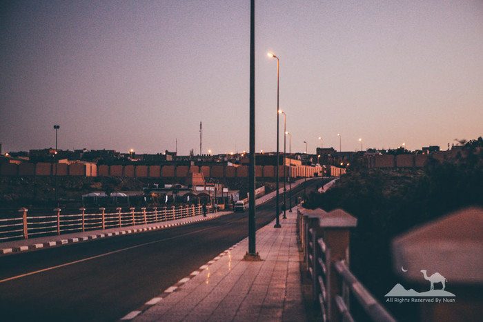
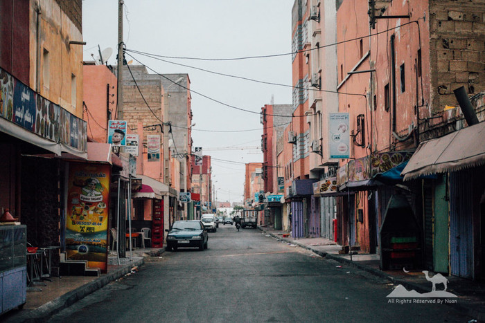
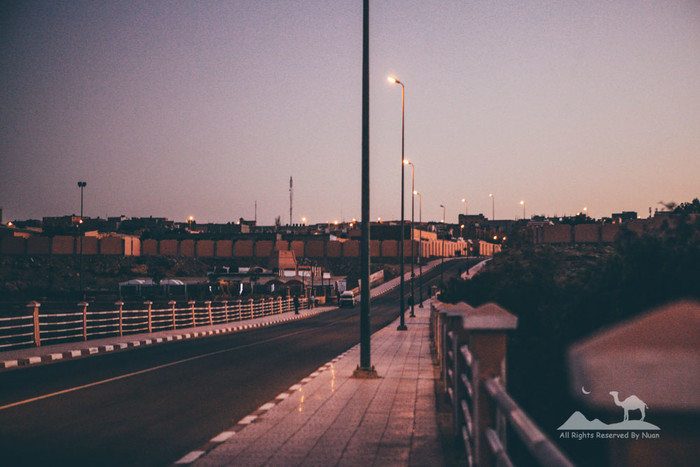
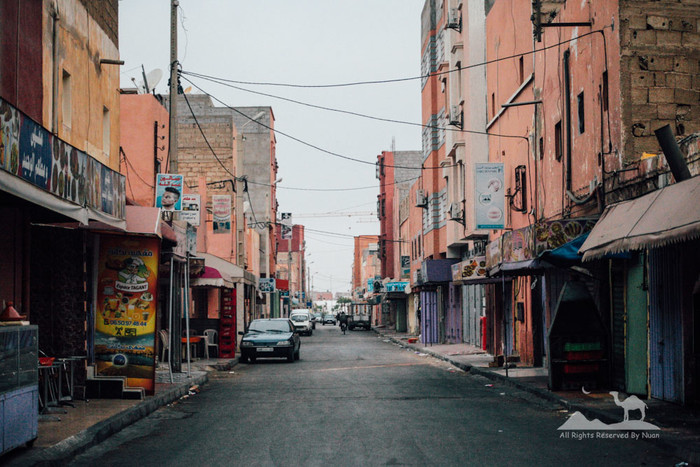

自16年6月结束带着问问为期75天的 “四国行” 后，因为当时的一些事情需要回国，而错过了从土耳其去黎巴嫩，然后南下到约旦，再坐船去埃及的完美行程，我一度以为短时间内无法再涉足非洲的土地。
没想到时隔3个月，一场即兴的决定成就了这次为期50天的摩洛哥之行，有人说常规行程15天就能转完的摩洛哥你们待了50天？
我承认这个50天的行程计划看似比不上最初幻想的那么“宏伟”： 从摩洛哥一直向东，经阿尔及利亚，到利比亚再到埃及，依然全程陆路过境，或者从葡萄牙到西班牙，再从直布罗陀海峡坐船去摩洛哥也不错。 结果止步于签证问题，东西南北都无法规划长线行程。
但是，也正是因为这样宽裕的时间，才让我们真正以一种旅居的状态行走在路上，遇见很多或触心，或铭心，或细微，或感动的经历和故事。
当我真正坐在电脑前，满上一杯酒时，便再一次进入仿佛与自己对话的时刻。 可以被忘记的人或事，也便不值得再提起，而我想跟你们分享的故事，是不管时隔多久再次谈起时，依然会嘴角上扬，或者……泪如雨面。
这样的开篇，注定接下来你所看到的所有，将是一段不会有太多心跳，但是却饱含着温度与你娓娓道来的故事。
 


